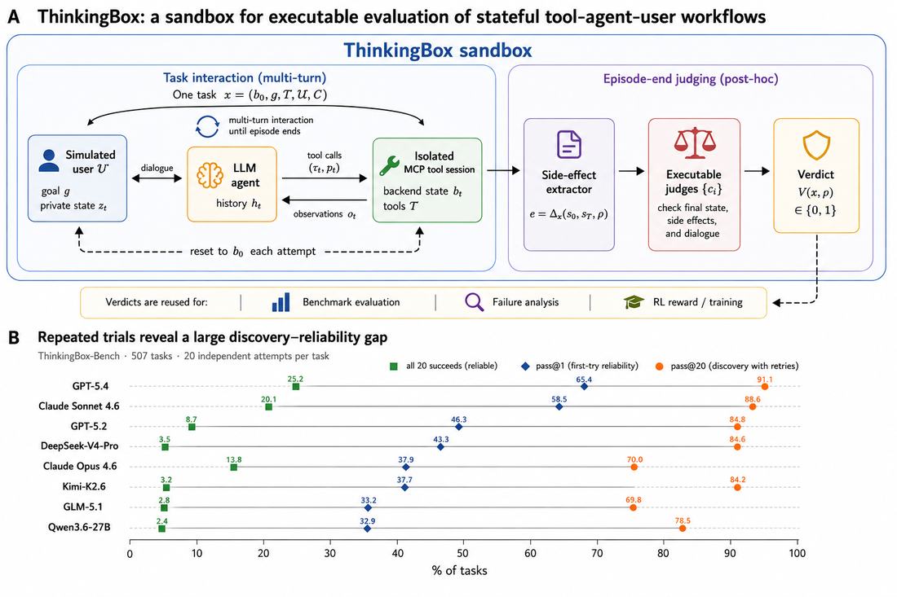
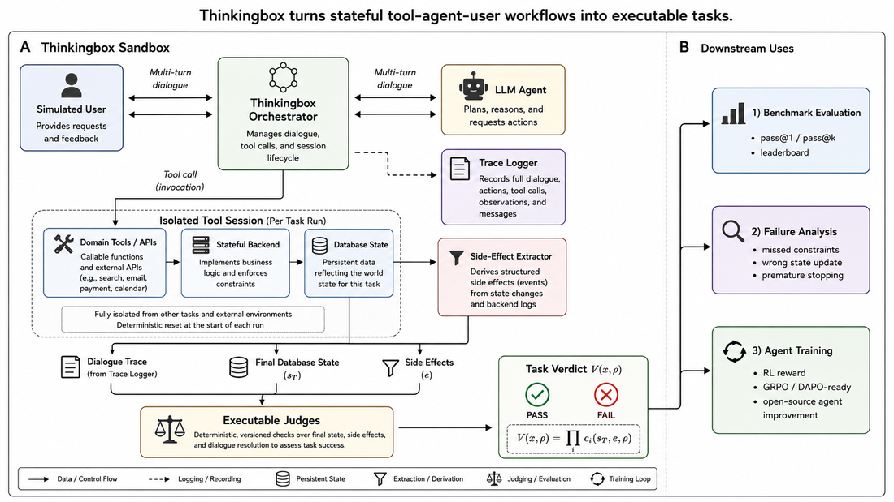
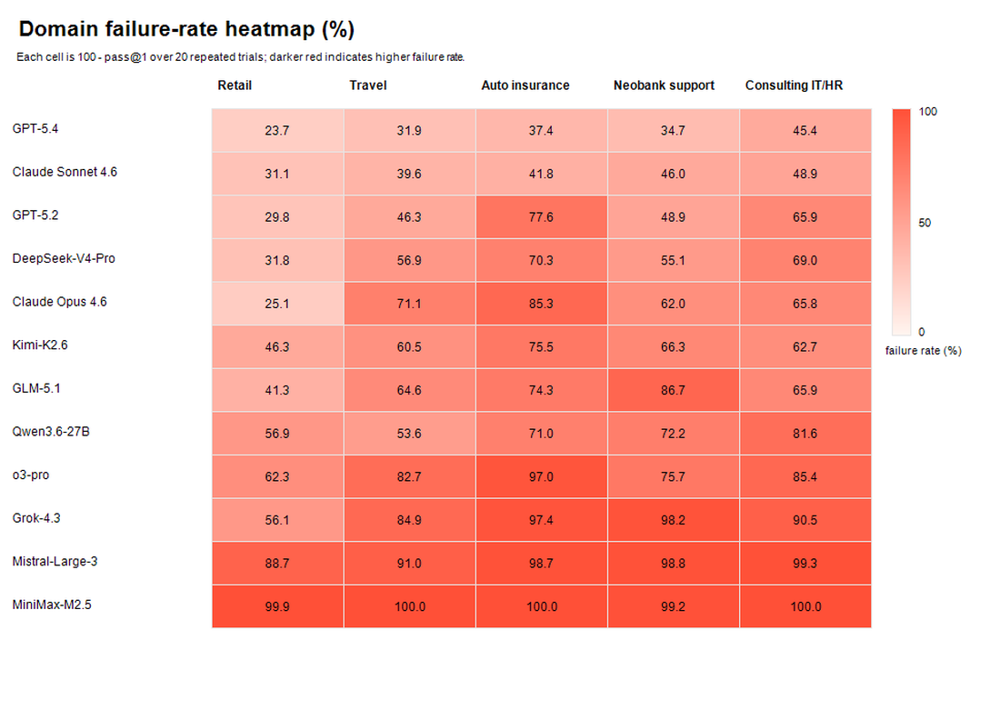

微软推出Thinkingbox：一个tool-agent-user交互的可复用沙盒（隔离MCP兼容工具会话 + 完整执行轨迹 + 对后端终态做结果评估）和Thinkingbox-bench（507个策略约束业务工作流，覆盖零售、酒店、车险、neobank内IT、咨询IT/HR）。
核心发现：最强模型pass@1达65.36%，但20次全部成功的仅25.25%：能偶尔找到成功轨迹 ≠ 可靠完成状态ful业务任务。
LLM agent越来越多在成功可被可执行artifact检验的地方评估：补丁可对代码库测、函数调用可解析或执行、agent可在交互环境评分。这种进步是关键，但基准设计天然偏向结果易指定和执行的任务。

实践中agent还必须完成既非代码也非纯tool-call trace的工作：改预订、退换货、更新保险理赔、路由内部服务请求。这类任务多轮、有状态、有后果，要求agent协调用户交互、工具使用、策略约束和后端副作用。
每个任务被检验要求的后端终态；另30个任务对最终响应应用一个或多个二进制rubric（覆盖要求的披露、保密性、与执行结果的一致性）。这些基于结果的检查允许不同合法轨迹，同时拒绝错误、缺失或额外的持久化效果：让实际非代码工作可验证而不降格为单一答案。
我们释放Thinkingbox和Thinkingbox-Bench（github.com/microsoft/thinkingbox）。
Thinkingbox由一个函数调用导向工具使用评估的局限驱动：它们主要评估API选择、参数生成或可执行调用正确性：能检查模型是否产生语法有效或可执行的调用，却不能检查agent是否完成了调用本应达成的工作。

在状态ful业务任务里，可观察答案只是成功的一部分。agent可能用错实体调对API、在收集必需确认前更新记录、产出可接受用户消息却未改后端、或执行违反策略的额外副作用。
Thinkingbox：跑agent、模拟用户、领域工具、副作用提取器、判定器于单一可复现循环，把实际工作变成可执行agent任务。
每个任务形式化为有限视界部分可观察MDP（POMDP）：状态空间含后端状态、模拟用户私有状态、评估相关事件日志、episode状态。agent不直接观察潜在状态，只行动于可观察历史。奖励稀疏且终末、由可执行判定定义。
编排与隔离：每次尝试重置任务到初始状态、创建隔离工具会话；同任务两次尝试不得共享DB行、缓存工具状态或副作用：否则pass@k和训练奖励不可靠。
副作用中心判定：评估工作结果而非轨迹表面形式。交互终止后提取副作用（相关状态变化+动作记录，任务相关、可由建任务者自定义），终态判定=对终态、副作用、dialogue的可执行检查。
Thinkingbox-bench把sandbox实例化成507个可执行tool-agent-user任务，覆盖零售/电商、旅行酒店、车险、neobank支持、咨询IT/HR。选择这些领域因为它们共享真实工作中的重复模式：用户常给不完整信息、策略约束agent可做什么、成功需要更新正确后端记录而不制造侧向副作用。
任务schema存agent应完成什么和必须避免什么：除用户目标和工具描述外，每个任务指定策略约束、期望状态变化、禁止的侧向变化和dialogue要求。用户规范本身拆成开场请求和单独的可披露事实集：后者对模拟用户可用但只在agent询问时释放。这对实际工作流关键：正确行为可能要求先澄清问题、拒绝不达标请求、或执行不可逆更新前确认。
每个领域7-15个工具系统、14-151个DB行、945-3,684词策略、每任务4.4-8.8个动作，5任务评估用DB终态、2个加rubric。
| Retail | Booking | Insurance | Neobank | Consulting | |
|---|---|---|---|---|---|
| Tasks | 98 | 104 | 100 | 104 | 101 |
| Backend systems | 11 | 8 | 7 | 3 | 18 |
| Databases (tables/rows) | 22/86 | 17/98 | 14/72 | 20/151 | 30/231 |
| Agent tools (write/read) | 16/17 | 10/28 | 14/19 | 13/19 | 13/14 |
| Policy (words) | 945 | 3,684 | 2,471 | 3,392 | 1,747 |
| Knowledge base (docs) | 9 | 11 | 8 | 8 | 9 |
| Actions per task | 4.4 | 8.8 | 4.7 | 6.7 | 5.8 |
| Evaluation | DB state | DB+rubrics | DB state | DB+rubrics | DB state |
Stage 1工作流设计：为五领域写工作流模板，识别重复企业助手场景（订单更改/退款、预订修改、理赔更新、账户支持、内部IT/HR请求），要求含实际用户目标、领域工具、策略约束、可验证结果。刻意不释放原始用户日志/客户转录：所有实例自足、含合成记录和领域真实模式。
Stage 2可执行任务实例化：每个模板实例化成具体任务世界：初始后端状态、暴露MCP兼容工具、模拟用户目标/行为、领域策略，写任务特定的终态/副作用/dialogue检查。任务有状态、策略条件化、副作用感知。
Stage 3可执行验证与过滤：在sandbox执行每任务、过滤损坏或病态用例（坏工具、不一致初始态、模糊目标、不可验证结果、依赖tool-call轨迹的检查、反复不能终止）。接受的任务必须至少有一条有效完成策略、保留清晰正确性准则：让基准可复现可执行、适合leaderboard和基于奖励的训练。
评测专有前沿模型（GPT-5.2/5.4、o3-pro、Claude Sonnet/Opus 4.6、Grok-4.3）和开权重模型（DeepSeek-V4-Pro、GLM-5.1、Kimi-K2.6、Mistral-Large-3、Qwen3.5-9B、Qwen3.6-27B）。同sandbox、同系统prompt、同工具定义/领域策略/模拟用户/可执行检查。每模型每任务20次独立trials，trial级成功=pass@1。
Leadeboard：GPT-5.4最高pass@1 65.36%，Claude Sonnet 4.6次之58.45%，GPT-5.2 46.28%；DeepSeek-V4-Pro最强开权43.26%（接近GPT-5.2），Kimi-K2.6 37.66%、GLM-5.1 33.19%、Qwen3.6-27B 32.94%；Qwen3.5-9B 5.41%、Mistral-Large-3 4.66%。模型规模不解释排名：Mistral-Large-3数百亿总参却低于小得多的Qwen模型。
| Model | Size | Retail | Auto | Booking | Bank | Consulting | Avg |
|---|---|---|---|---|---|---|---|
| GPT-5.4 | – | 76.33 | 62.65 | 68.13 | 65.34 | 54.60 | 65.36 |
| Claude Sonnet 4.6 | – | 68.93 | 58.20 | 60.38 | 53.99 | 51.14 | 58.45 |
| GPT-5.2 | – | 70.20 | 22.40 | 53.70 | 51.15 | 34.06 | 46.28 |
| DeepSeek-V4-Pro | 1.6T/49B | 68.21 | 29.65 | 43.13 | 44.86 | 31.04 | 43.26 |
| Kimi-K2.6 | 1T/32B | 53.72 | 24.50 | 39.52 | 33.65 | 37.33 | 37.66 |
| Claude Opus 4.6 | – | 74.90 | 14.65 | 28.89 | 38.03 | 34.21 | 37.91 |
| GLM-5.1 | 744B/40B | 58.67 | 25.70 | 35.43 | 13.27 | 34.06 | 33.19 |
| Qwen3.6-27B | 27B | 43.11 | 29.00 | 46.39 | 27.84 | 18.37 | 32.94 |
| o3-pro | – | 37.94 | 2.96 | 24.16 | 24.37 | 14.75 | 20.60 |
| Grok-4.3 | – | 43.93 | 2.60 | 15.14 | 1.78 | 9.55 | 14.38 |
| Qwen3.5-9B | 9B | 19.15 | 0.45 | 4.52 | 1.06 | 2.34 | 5.41 |
| Mistral-Large-3 | 675B/41B | 11.28 | 1.30 | 8.99 | 1.15 | 0.74 | 4.66 |
三个一致模式。① 聚合排名掩盖大的领域依赖差异：跨模型平均，retail最容易（约52%），车险最难（约23%）；预订、银行、咨询居中（约35%、30%、27%）。排序不是任务数的属性（各域任务数相当），而是各域对agent施加的交互和策略负担不同。

② 强模型非全域强：GPT-5.4和Sonnet 4.6是仅有的每个领域都 >50% 的模型。GPT-5.4从retail 76.33% 跌到consulting 54.60%；Sonnet 4.6更均衡（51.14-68.93%）。Claude Opus 4.6和GPT-5.2尖锐不对称：retail有竞争力但Opus车险跌到14.65%、GPT-5.2跌到22.40%：高通用能力或单一工作流强不保证向其它状态ful工具使用设置稳健迁移。
③ 开权性能高度不均：DeepSeek-V4-Pro最强开源（43.26%）逼近GPT-5.2。Kimi-K2.6、GLM-5.1、Qwen3.6-27B第二梯队但领域画像各异。Qwen3.6-27B vs 9B差距巨大（32.94% vs 5.41%）。模型规模不单独解释：工具使用格式、agentic post-training、推理模式、基准特定交互鲁棒性至少与名义参数数一样重要。
用完整轨迹把失败trials归类，给每个失败trace一个排他主导签名（基于消息、工具调用、工具响应、最终答案、终止标记的决定性证据）。四类：
Tool Usage Errors主导（平均77.5%）：典型trace含一个或多个工具错误、失败前置条件或失败的查找，之后agent无法修复工作流；有些情况下它继续行动如失败调用已成功：并非畸形工具调用，而是无法从环境反馈中恢复。GPT-5.4(89.6%)、GLM-5.1(88.1%)、Kimi-K2.6(85.2%)尤其突出。
No State-Changing Action（平均2.5%）：执行了正确查找甚至识别相关记录，但在发出必须的create/update/cancel/refund/provisioning动作前终止：遗漏必需工作流子目标而非无法取信息。Qwen3.6-27B最小(0.6%)。
Incomplete User Resolution（平均7.9%）：至少部分后端工作流但以不完整/矛盾/仍请求信息的用户响应结束。DeepSeek-V4-Pro最高(24.7%)、GPT-5.4最低(0.5%)：模型级转换尝试工作流为完整用户解决的能力差异。
Wrong State Update（平均12.1%）：成功调用变更工具但结果状态转换错误（错实体/日期/资格决定/票状态/退款/访问级别/副作用）。trace可看似操作成功：工具调用无错误返回、agent自信确认完成：但终态DB违反任务要求。o3-pro(27.8%)、Grok-4.3(22.5%)、GPT-5.2(18.3%)最大。
| Model | Tool Usage | No State-Changing | Incomplete Resolution | Wrong State Update |
|---|---|---|---|---|
| GPT-5.4 | 89.6 | 1.6 | 0.5 | 8.3 |
| Claude Sonnet 4.6 | 84.0 | 2.8 | 4.2 | 8.9 |
| GPT-5.2 | 80.1 | 0.7 | 0.9 | 18.3 |
| DeepSeek-V4-Pro | 69.8 | 0.8 | 24.7 | 4.7 |
| Claude Opus 4.6 | 78.1 | 3.0 | 10.2 | 8.7 |
| Kimi-K2.6 | 85.2 | 1.3 | 12.1 | 1.4 |
| GLM-5.1 | 88.1 | 1.3 | 3.5 | 7.0 |
| Qwen3.6-27B | 75.0 | 0.6 | 13.1 | 11.2 |
| o3-pro | 67.4 | 3.9 | 0.9 | 27.8 |
| Grok-4.3 | 69.2 | 6.8 | 1.5 | 22.5 |
| Mistral-Large-3 | 65.8 | 4.6 | 15.2 | 14.4 |
| 平均 | 77.5 | 2.5 | 7.9 | 12.1 |
推出Thinkingbox（可复用验证tool-agent-user交互沙盒）和Thinkingbox-bench（状态ful业务工作流可执行基准）。结果：强工具使用性能尚未转化为可靠工作完成：结果跨领域和重复尝试变化，许多失败涉及糟糕恢复或错误状态改变、尽管响应看似合理。
强调评估终态结果和侧向效果而非表面完成的重要性。希望Thinkingbox为开发在后果性工作流里一致正确的agents提供基础。局限在附录：受公开限制的命名基准多样性、合成而非真实用户数据、模型即时快照、20次采样的噪音边界等。
参考：https://arxiv.org/html/2608.19741v1